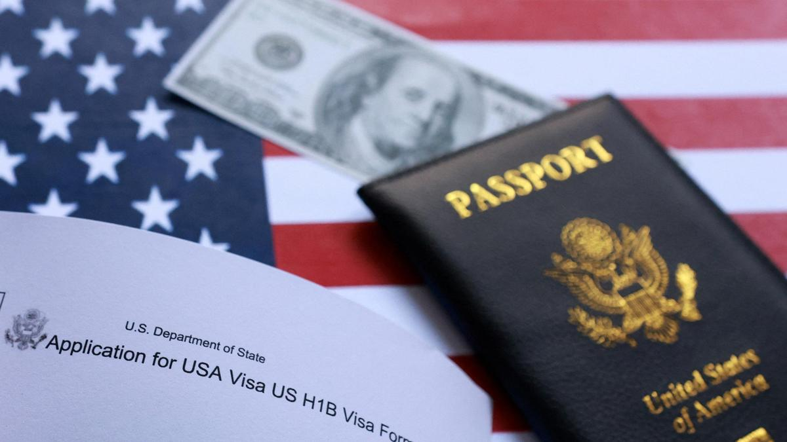

தேதி: 27.11.2025 நாள்:வியாழன் நேரம் :மாலை
H-1B மீதான அமெரிக்க விளக்கம் தொழில்நுட்ப வட்டாரங்களில் பதட்டங்களை அமைதிப்படுத்துகிறது, ஆனால் சிலர் ஒத்திவைக்கப்பட்ட தாக்கத்தைப் பற்றி எச்சரிக்கின்றனர்.
அமெரிக்க அதிபர் டொனால்ட் டிரம்பின் சமீபத்திய $100,000 கட்டணம் புதிய விண்ணப்பதாரர்களுக்கு மட்டுமே விதிக்கப்படும் "ஒரு முறை" கட்டணமாக இருக்கும். புதிய விசா கொள்கை தொழில்நுட்பத் துறையை உலுக்கியதால், வெள்ளை மாளிகை சனிக்கிழமை (செப்டம்பர் 20, 2025) ஒரு முக்கிய விளக்கத்தை வெளியிட்டது. இந்த உத்தரவு ஞாயிற்றுக்கிழமை (செப்டம்பர் 21) நள்ளிரவு முதல் அமலுக்கு வந்தது. நடைமுறைக்கு வரும் அறிவிப்பு தேதிக்கு முன் சமர்ப்பிக்கப்பட்ட H-1B மனுக்கள் பாதிக்கப்படாது.
வெள்ளை மாளிகையின் பத்திரிகை செயலாளர் கரோலின் லீவிட்டின் தெளிவுபடுத்தலுக்கு முன்னதாக, வெள்ளிக்கிழமை (செப்டம்பர் 19) முக்கிய கட்டண உயர்வை அறிவித்த அமெரிக்க வர்த்தக செயலாளர் ஹோவர்ட் லுட்னிக், இது ஆண்டுதோறும் செலுத்தப்படும் என்றும் புதிய விசா மற்றும் புதுப்பித்தல்களைத் தேடுபவர்களுக்குப் பொருந்தும் என்றும் கூறினார், இது தற்போதைய H-1B தொழிலாளர்களிடையே பீதியைத் தூண்டியது, அவர்கள் திரும்பி வர பணம் செலுத்த வேண்டிய கட்டாயத்தில் இருப்பார்கள் என்று அஞ்சப்படுகிறது.
டிரம்ப் பிரகடனத்தில் கையெழுத்திட்ட சில மணிநேரங்களுக்குப் பிறகு, H-1B விசாக்கள் குறித்து அமெரிக்காவில் உள்ள இந்தியர்களிடையே பரவலான பீதி, குழப்பம் மற்றும் கவலை ஏற்பட்டது. அமெரிக்க சட்டமன்ற உறுப்பினர்களும் தலைவர்களும் இதை "பொறுப்பற்றது" என்று அழைத்தாலும், பல H-1B விசா வைத்திருப்பவர்கள் தாயகத்திற்கு விமானங்களில் ஏறக் காத்திருந்தபோதும், ஏற்கனவே இந்தியாவில் உள்ள பலர் திரும்பி வருவதற்காகத் துடித்துக் கொண்டிருந்தபோதும் கடைசி நிமிடத்தில் பயணத் திட்டங்களை ரத்து செய்தனர். H-1B விசா வைத்திருப்பவர்கள் அல்லது வேலை அல்லது விடுமுறைக்காக அமெரிக்காவிற்கு வெளியே உள்ள அவர்களது குடும்ப உறுப்பினர்களுக்கு குடிவரவு வழக்கறிஞர்கள் மற்றும் நிறுவனங்கள் எச்சரிக்கை விடுத்தன.